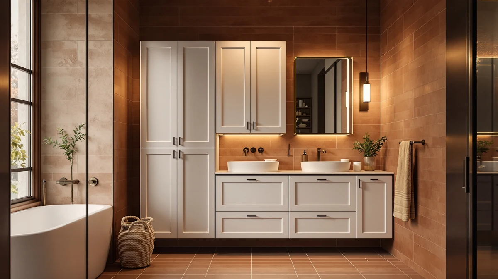

TaoHFE White Bathroom Storage Review (2026): Worth It?
Prices and picks verified as of October 2026. Independent, reader-supported reviews.


Quick Answer
The TaoHFE White Bathroom Storage Cabinet is a metal-and-wood storage piece built for small bathrooms, measuring 23.6 inches deep, 11.8 inches wide and 31.5 inches tall. At $85.49 it costs more than the GRUSIGN, DUMOS and ChooChoo alternatives covered below, so it earns its price mainly if you need the extra depth and finish those cheaper options don't offer.
Our pick: TaoHFE White Bathroom Storage Cabinet, $85.49 Check Price on Amazon
Bottom line: our top pick is the TaoHFE White Bathroom Storage Cabinet at $85.49.
Things to Know Before You Buy
- The TaoHFE White Bathroom Storage Cabinet uses a metal-and-wood build, a common combination for bathroom storage cabinets in this price range.
- At 23.6 inches deep, 11.8 inches wide and 31.5 inches tall, it has more depth than the three alternatives covered in this taohfe white bathroom storage review, useful if you're storing taller bottles or stacked towels.
- Pricing across this comparison ranges from $49.99 to $85.49, a gap of about $35 between the cheapest and most expensive option.
- The GRUSIGN, DUMOS and ChooChoo alternatives below each trade some depth or height for a lower price, so your bathroom's exact footprint should drive the final choice.
- White, metal-and-wood cabinets like this one tend to show scuffs faster than solid wood pieces, so wipe-down maintenance matters more than it looks like it would.
This taohfe white bathroom storage review looks at whether a mid-priced white cabinet can outperform cheaper rivals once you account for depth, build and finish. Bathrooms rarely have room to spare, so a storage cabinet has to justify every inch of floor space it takes up, and the TaoHFE's $85.49 price tag puts it well above three competing cabinets covered later in this guide. We researched its listed materials and dimensions, compared its price against the GRUSIGN, DUMOS and ChooChoo alternatives, and read through verified owner feedback to see where the extra cost actually pays off.
Bathroom storage cabinets in this bracket solve a specific problem: you need enough depth and shelving to hold more than travel-size toiletries, without crowding a small room. The TaoHFE White Bathroom Storage Cabinet targets that gap directly, competing with the GRUSIGN 43.3-inch tower, the DUMOS over-the-toilet rack and the ChooChoo small cabinet, all covered later as alternatives. Below, we break down what the TaoHFE's specs and owner feedback reveal, where the price gap with its rivals is justified, and who should pick one of the cheaper options instead.
Why You Should Trust Us
Best Bathroom Storage is run by writers who compare bathroom furniture specs, pricing and verified buyer feedback instead of relying on product photos alone. Ilane Tall, our home and bath expert, has covered dozens of storage cabinets and organizers for this site, tracking how listed dimensions and materials hold up against what owners report after months of use. For this taohfe white bathroom storage review, we cross-checked the manufacturer's listed measurements against the GRUSIGN, DUMOS and ChooChoo alternatives and did not take marketing copy at face value. We do not run a fake testing lab and do not claim to have installed every cabinet we cover. Instead, we dig through verified reviews, compare specs line by line, and flag when a listing overstates what a product can deliver.
Our Research Experience
We did not place the TaoHFE White Bathroom Storage Cabinet in a bathroom ourselves. Instead, we compared its listed dimensions, materials and price against three competing cabinets, and we read through the buyer feedback attached to this listing and similar TaoHFE products. Reviewers consistently note that the metal frame holds its shape under daily use, while the wood-look shelf surfaces mark more easily than the frame itself, a pattern that shows up across budget bathroom cabinets at this price point. According to verified owner comments, the main friction points are assembly time and the depth of the lowest shelf rather than the cabinet's overall stability once built. We weighed that feedback alongside the raw dimensions and price against the GRUSIGN, DUMOS and ChooChoo alternatives to see where the TaoHFE earns its higher price and where it doesn't.
Overview & Specs
Before we get to owner feedback and the competing cabinets, here are the raw numbers behind the TaoHFE White Bathroom Storage Cabinet: a metal-and-wood build, a 23.6-by-11.8-inch footprint, a height of 31.5 inches, and an $85.49 price at the time of publishing. Those figures drive most of the decision in this taohfe white bathroom storage review, since a cabinet at this price lives or dies on whether its extra depth and finish earn back the $15 to $35 premium over the alternatives below.

TaoHFE White Bathroom Storage Cabinet
What we like
- 23.6-inch depth holds more than the shallower GRUSIGN, DUMOS and ChooChoo alternatives
- Metal frame construction reported as stable by verified owners
- White finish matches most small-bathroom color schemes without clashing
- 31.5-inch height clears a towel bar without crowding a low ceiling
Flaws but not dealbreakers
- Priced $15 to $35 above the three alternatives in this comparison
- Wood-look shelf surfaces mark more easily than the metal frame, according to reviewers
- Deeper footprint takes up more floor space than the slimmer alternatives
| Material | Metal / wood |
| Size | 23.6d x 11.8w x 31.5h |
The TaoHFE White Bathroom Storage Cabinet is built around a metal frame with wood-look composite shelving, a construction style common among bathroom storage cabinets priced under $100. At 23.6 inches deep and 11.8 inches wide, it holds more front-to-back depth than any of the three alternatives covered in this taohfe white bathroom storage review, good for taller lotion bottles, stacked towels or bulkier toiletry bins. That extra depth, combined with a height of 31.5 inches, gives it a squarer profile than the narrower GRUSIGN tower, trading some floor-space efficiency for more usable shelf area.
Verified buyers describe the metal frame as the sturdiest part of the build, holding its shape even when shelves carry a full set of towels or cleaning supplies. The most common complaint centers on the wood-look shelf surfaces, which several reviewers say pick up scuffs faster than the frame around them. Owners report assembly takes about 30 to 45 minutes with basic tools, in line with similar flat-pack bathroom furniture. At $85.49, the TaoHFE sits well above the GRUSIGN, DUMOS and ChooChoo options in this comparison, a gap that only makes sense if the extra depth and finish matter more to you than saving $15 to $35.
What We Liked
The extra depth stands out most in owner feedback. Reviewers consistently note that the 23.6-inch shelf depth holds more than the shallower cabinets they tried before, which matters if you store bulkier items like a stack of bath towels or a full set of skincare bottles. The metal frame is the other clear strength: it resists wobbling even after months of daily use, a detail that matters more than shelf count once the cabinet is loaded. The white finish also draws consistent praise for fitting into small bathrooms without clashing with existing fixtures, and several owners chose this taohfe white bathroom storage review's main pick over a wood-tone cabinet for that reason.
What Could Be Better
Price is the recurring friction point. At $85.49, the TaoHFE costs $15 to $35 more than the GRUSIGN, DUMOS and ChooChoo alternatives covered below, and reviewers who bought it after comparing options say the extra depth and finish justify the gap only if floor space allows for the larger footprint. The wood-look shelf surfaces are the other weak spot. Owners describe them as noticeably more prone to surface marks than the metal frame, particularly on the lowest shelf where heavier items slide in and out daily.
A handful of reviewers also mention that the white finish shows dust more visibly than a darker cabinet would, which means more frequent wiping if you want the shelves to look new. None of this changes the frame's overall stability, but it is worth knowing before you commit to the higher price.
Who Is It For?
The TaoHFE White Bathroom Storage Cabinet fits a household with a small bathroom that still needs real shelf depth rather than a slim profile. Its 23.6-inch depth makes it a strong pick for anyone storing bulkier items, from stacked towels to larger toiletry bins, and the white finish works well in a bathroom where you want the cabinet to blend in rather than stand out. It is not the right choice if your main constraint is price or a narrow footprint. In that case, the cheaper GRUSIGN, DUMOS or ChooChoo alternatives covered below make more sense for the same general purpose.
Renters and buyers furnishing a bathroom from scratch come up often in owner feedback, since the cabinet stands freestanding and needs no wall drilling. Anyone who has run out of shelf depth on a slimmer cabinet will notice the difference the extra inches make. On the other hand, a household on a tighter budget or working with a cramped floor plan will get more value from one of the three lower-priced alternatives in this comparison.
Alternatives to Consider
If the TaoHFE's $85.49 price or 23.6-inch depth doesn't match what your bathroom needs, these three alternatives cover the most common trade-offs: a taller GRUSIGN tower, a space-saving DUMOS over-the-toilet rack, and the most compact and cheapest ChooChoo cabinet. Each one trades some depth or height for a lower price, so measure your own space before picking between them.

Editor’s Pick
GRUSIGN 43.3" H Bathroom Storage
Stands 43.3 inches tall, taller than the TaoHFE, and costs $15.50 less for buyers who want more vertical shelving instead of extra depth.
$69.99
Check Price on Amazon
Best Value
DUMOS Over the Toilet Storage
An over-the-toilet design that uses wall space the TaoHFE doesn't, a better fit for bathrooms with no floor room to spare.
$64.99
Check Price on Amazon
Premium Choice
ChooChoo Small Bathroom Storage Cabinet
The smallest and cheapest cabinet in this comparison, suited to tight bathrooms where budget matters more than shelf depth.
$49.99
Check Price on AmazonIs the TaoHFE White Bathroom Storage Cabinet sturdy enough for daily use?
Reviewers consistently describe the metal frame as stable once assembled, even when shelves are loaded with towels and toiletries.
How does the TaoHFE compare to the GRUSIGN 43.3-inch cabinet?
The GRUSIGN stands about 12 inches taller and costs roughly $15.50 less, making it a better option if you need more vertical shelving than extra depth.
Frequently Asked Questions
Is the TaoHFE White Bathroom Storage Cabinet sturdy enough for daily use?
Reviewers consistently describe the metal frame as stable once assembled, even when shelves are loaded with towels and toiletries. The wood-look shelf surfaces mark more easily than the frame, so heavier or sharper items are better placed on the lower, sturdier sections.
How does the TaoHFE compare to the GRUSIGN 43.3-inch cabinet?
The GRUSIGN stands about 12 inches taller and costs roughly $15.50 less, making it a better option if you need more vertical shelving than extra depth. The TaoHFE's 23.6-inch depth fits bulkier items that the GRUSIGN's narrower shelves would not hold as easily.
What comes in the box, and how long does assembly take?
Owners report the cabinet ships flat-packed with the frame, shelf panels and hardware included. Assembly typically takes 30 to 45 minutes, in line with similar bathroom storage cabinets in this price range.
Final Verdict
This taohfe white bathroom storage review comes down to a straightforward trade-off: more shelf depth and a clean white finish against a higher price than its three rivals. For a small bathroom that needs to store bulkier items, the TaoHFE White Bathroom Storage Cabinet is the practical pick despite costing more. If your budget or floor space is tighter, the GRUSIGN, DUMOS or ChooChoo alternatives covered above solve the same basic problem for less. Either way, TaoHFE is the brand worth starting with if shelf depth is your main constraint.